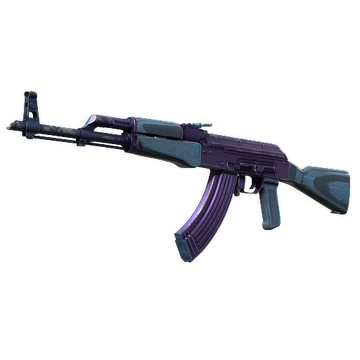

Автоматическая штурмовая винтовка.
Основное оружие террористов в Counter-Strike 2.
На сегодняшний день является самым распространенным стрелковым оружием в мире.
Среди главных достоинств АК-47 можно выделить:
К недостаткам относится: